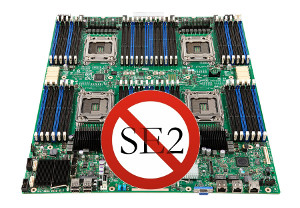
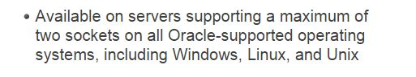
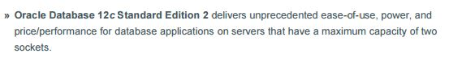
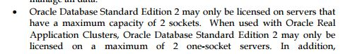

A previous blog post explaining what happens for those in ‘Standard Edition One’ had a “don’t worry” in the title because you can upgrade to SE2 with minimal additional cost – except when you have to buy new NUPs – and get only small additional limitation. I didn’t made such a post for people in Standard Edition but there is a case where it can be worrying because of the 2 socket rule.  Ok, let’s try to say it in a positive way… Standard Edition One is not totally dead. Only the affordable price of Standard Edition One is dead. But it’s limitation survived in Standard Edition 2: it can be licensed only on servers that have a maximum capacity of two sockets.
Ok, that’s not actually very positive. Let’s forget the politically correct language:
Which sockets do you count? Can you use visualization to fit within the limit? Can you remove physically a processor from a socket? Oracle has very short sentences to define limitations that are not so easy to understand. How to count sockets depends on the context.
Because of those different cases, and the lack of clear documentation at the begining of the announce of SE2, the third point was not clear for me until Bjoern Rost made me read the rules again. I thought that it was possible to remove 2 processors from a 4-socket server and then install SE2 on it but that was wrong. It’s the server capacity that counts, and the sockets – not the processors – within it. If the server spec shows a 4 socket motherboard and you have Oracle installed, then you must pay for Enterprise Edition and there is no way to workaround that. If you think about putting glue on the socket, or get rid of it with your hammer drill, then I suppose you should send a picture of it to your LMS contact to validate it (please put me in cc if you do that!)
Ok, you think it was obvious because we are talking about sockets and not processors? Don’t rely on that. With multi-chip processors, each chip is considered as a socket, but that’s another story.
Here are the references about the 2 socket limit rules:
https://www.oracle.com/database/standard-edition-two/index.html 
http://www.oracle.com/technetwork/database/oracle-database-editions-wp-12c-1896124.pdf 
http://www.oracle.com/us/corporate/pricing/databaselicensing-070584.pdf 
And the reading of those rules have been made clear by the Database Product manager Dominic Giles:
@lotharflatz @pfierens @johnnyq72 @annsjokvist When I'm talking about SE2 I'm only talking real servers. So 1 or 2 physical sockets.
— dominic_giles (@dominic_giles) October 15, 2015
and the Master Product Manager Database Upgrade & Migrations Mike Dietrich:
Thanks for all the blogs on SE2 Franck, and thanks for all these evidences. Hard time for “LMS guys” and hard time for some SE customers
Enjoy at OOW